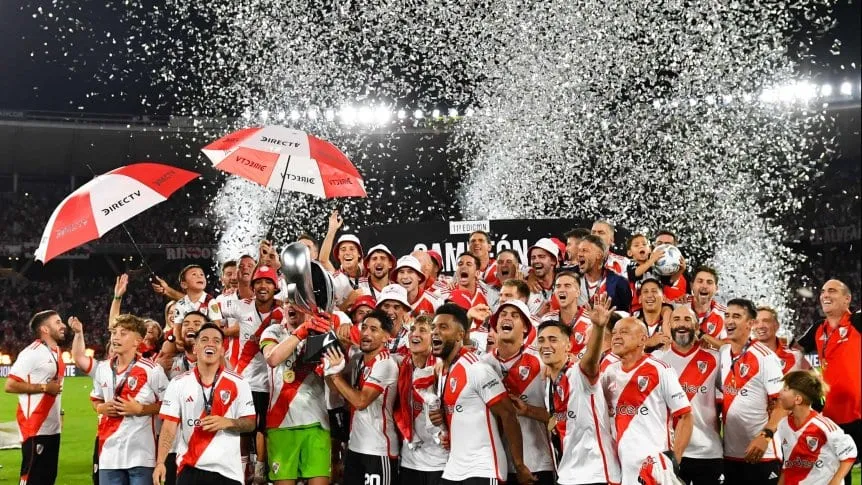
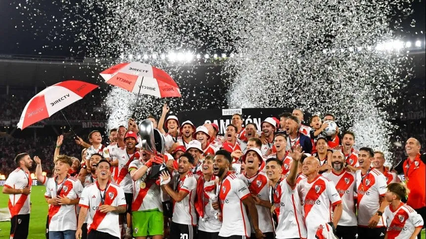

Conocé las últimas noticias de River y todas las novedades de hoy, viernes 15 de marzo. Tras la consagración contra Estudiantes, el Millonario ya piensa en el choque con Gimnasia.
Foto: (Hernan Cortez/Getty Images).
Conocé las últimas noticias de River y todas las novedades de hoy, viernes 15 de marzo. Tras la consagración contra Estudiantes, el Millonario ya piensa en el choque con Gimnasia.
Foto: (Hernan Cortez/Getty Images).
El Millonario le ganó 2-1 a Estudiantes de La Plata en el estadio Mario Alberto Kempes, con un gol en contra de Zaid Romero y un golazo agónico de Rodrigo Aliendro, y se consagró campeón de la Supercopa Argentina en Córdoba. Jorge Brito le dio su apoyo a Martín Demichelis para que sea el DT hasta el final de su mandato. Ahora, el plantel ya piensa en el partido con Gimnasia del domingo.